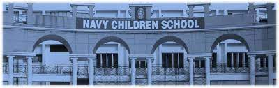

The Naval Public School of Delhi, India, was established in 1965 and is the flagship of the Naval Public Schools system set up by the Navy Education Society.
The Navy Children School earlier known as The Naval Public School was established on 2 August 1965. It began in one big hall as a primary school with approximately 600 children. The hall was divided into two where both LKG and UKG students were accommodated. One facilitator and one office staff helped to run the school.Today the school's objective is to provide education geared to the National Objectives, as envisaged in the National Policy of Education, 1986.
The school has a number of great facilities that enhances a childs learning and makes it fun
There are laboratories for Biology, Physics, Chemistry, Geography and Mathematics. They are well stocked with equipment models etc.
The school has three computer labs equipped with the multimedia machines for students from KG to XII . Computer Aided Learning (CAL) packages are used like Extra Marks. These are computer based teaching systems which involve capsules on subjects which are displayed on smart boards through networked computers installed in all classrooms.
The school has an audio visual room with a collection of audio-video cassettes/CDs to be used as aids. Bhartiya Vidya and Eureka capsules are available. The is school aslo has an amphitheatre with air red stone structure that is for competitions and workshops. The school has an auditorium with sound-proofing and projector, for activities and workshops.
A Counselor and Special Educator provide support to the emotional, behavioural, interpersonal and academic problems faced by the students. A special educator is present to help to children with special needs, and offer students a shoulder to lean on in times of stress or upheavals.
The school cafeteria runs on eco-friendly standards. It's a great meeting area for students at their break times or after school.The school aslo has a MI room for medical purposes . Sports and gaming activities are part of the daily routine. The school also has a boo shop and a tailor shop.